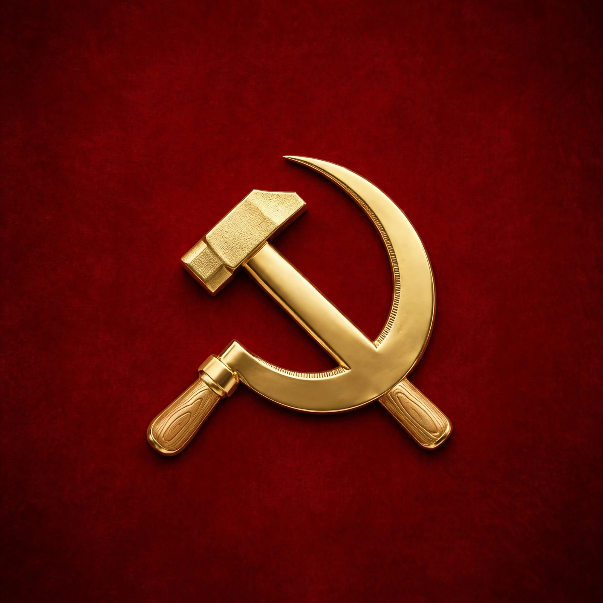

Communist party

A communist party is a political party that seeks to realise the socio-economic goals of communism — a classless, stateless society based on common ownership of the means of production. The term was popularised by Karl Marx and Friedrich Engels in The Communist Manifesto (1848) and was adopted by parties formed after the split of the international socialist movement following the Russian Revolution of 1917.
Organisation
Parties following the model of Vladimir Lenin organise as vanguard parties under the principle of democratic centralism: free debate until a decision is taken, then binding discipline in carrying it out. The basic unit is the party cell or branch, rising through district and regional committees to a central committee and a political bureau (politburo).
Ruling parties
Communist parties govern or have governed numerous states, including the Soviet Union (until 1991), China, Cuba, Vietnam, Laos and North Korea. In China, the Chinese Communist Party, founded in 1921, has ruled since 1949 and is among the world's largest political parties by membership.
Non-ruling parties
Elsewhere communist parties compete in elections, sometimes with significant results — as in India, Nepal, South Africa (as part of the governing alliance), Cyprus, and parts of Europe and Latin America — while others operate underground or are banned. After 1989–1991 many parties dissolved, renamed themselves, or adopted democratic socialist identities, while others retained the communist name and symbols.
See also: Communism, Marxism, Dominant-party system.